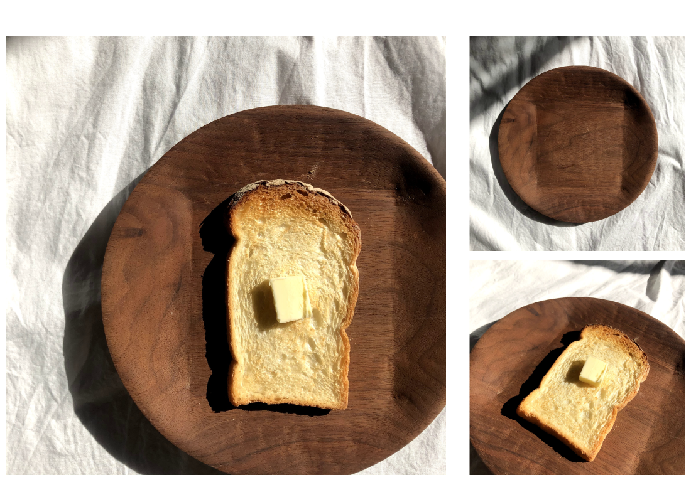
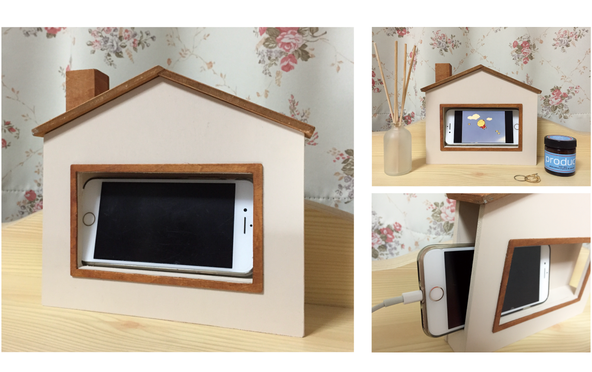
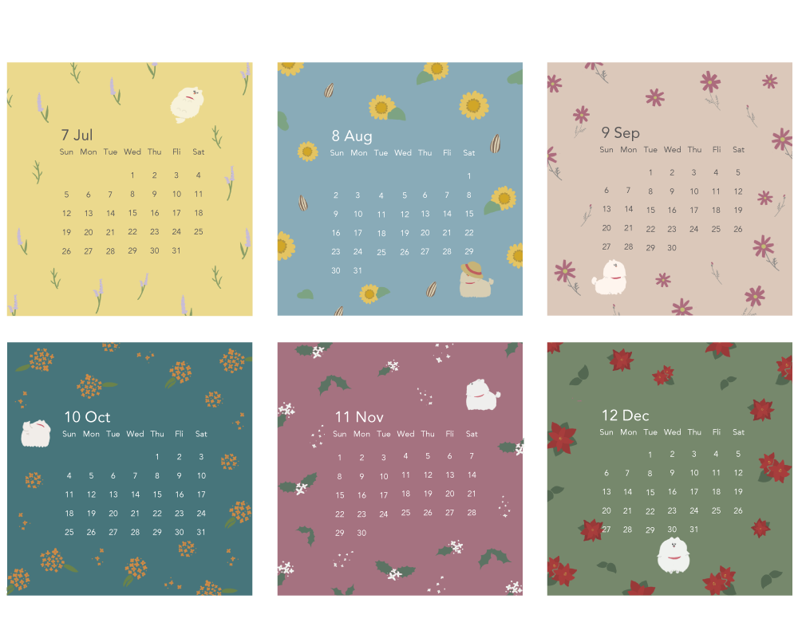

TOP
PRODUCT
GRAPHIC
ABOUT
CONTACT
AYAKA WADA
PORTFOLIO

木皿 / ウォルナット / 2019
「食パンの食パンによる食パンのためのパン皿」
食パンがぴったり収まるお皿です
一見まんまるのお皿ですが底面に向かってだんだん四角くなっています
×
使い捨て携帯型化粧品 / 厚紙・フィルム / 2019
「はんなりこすめ」
花びらの「重なり」と化粧を「重ねる」ことに着目し制作しました
あぶらとり紙、おしろい紙、チーク、アイシャドウ、口紅が花弁のように重なり
一枚ずつ千切るように切り離し使用します
×
照明 / 合板・麻紐 / 2020
「Tree Light」
麻紐で作成した円形のシェード部分で葉を表し
それを支える木材をしならせ木の幹に見たてました
薄い合板を何層にも重ね曲げることで滑らかな曲線を表現しました
×
麺鉢・小皿 / 赤土・釉薬 / 2020
少し小ぶりの鉢と小皿です
食材が映えるようシンプルなデザインに
うどんを食べるときに丁度良いです
×

スマートフォンスタンド / 合板 / 2020
「SmaHome」
テーマは”スマホにも帰るおうちがある”
お家に帰してあげることで なんとなくスマホをいじる時間を減らすことができます
動画を見る際のスタンドとして使用しても可愛く楽しめます
×
カトラリー / 真鍮 / 2020
「For yogurt!」
ヨーグルト用のスプーンとジャムスプーン
手に馴染むようなデザインにしました
持ち手の角度やくぼみの深さに違いを持たせたところがポイントです
×
スタンプラリー / パイン材・消しゴムはんこ・ダンボール / 2020
「My Home Town」
ダンボール製の車に乗り街の建物に見立てて作ったスタンプを探しながら遊びます
他にも宝探しやお店屋さんごっこなど遊び方は工夫次第です
お家の中であなただけの街を作れます
×
フォールディングスツール / 合板 / 2020
「Simple high stool」
ちょっと腰を掛けたいけれど落ち着きすぎると作業が進まない
そんな時にぴったりのスツールを制作
座面の高さは自分の身長に合わせ腰掛けやすい高さに設定しました
×
キャリーケースストッパー / 石塑粘土 / 2020
「どすこいストッパー」
電車内などで揺れ動いてしまうキャリーケースを
力持ちのお相撲さんが支えてくれるようなストッパーを制作
滑り止めとして底に吸盤を付けました
普段はキーホルダーとして 必要な場面でストッパーとして使用します
カプセルトイとして販売することを想定し 内封する説明書も作成しました
×
デッサン / 鉛筆 / 2018
モチーフはダンボール・木材・リボン・ペンキ缶・グラス
初めて本格的なデッサンに取り組み難しくも感じましたが
毎テーマやりがいを感じ取り組みました
×
名刺 / Illustrator / 2019
イニシャルであるAWをモチーフにした
ロゴがポイントです
×
タイプフェイス / Illustrator / 2019
似顔絵を元にフォントを組み合わせたコラージュ
フォントの選定からこだわり制作しました
×

カレンダー / Illustrator・Photoshhop / 2019
2020年用のカレンダー
季節の花と白くてまん丸なポメラニアンを描きました
×
レンダリング / コピック・色鉛筆・絵具 / 2019
既存製品とオリジナルデザインの製品のレンダリング
左の画像はわたしがデザインした掃除機です
×
大学主催コンペ フライヤー / Illustrator・Photoshop / 2020
学内で募集したデザイン案の中から選んでいただきました
『夏の、』というテーマを感じられるような大きい入道雲
また学外の中高生からの応募も多いため 馴染み深い教室から覗く窓の風景を描きました
×
誌面デザイン / Illustrator・Photoshop・InDesign / 2020
絶滅危惧種キバノロの特集ページ
あまり知られていないキバノロの可愛らしさを知って欲しい！という気持ちで
全体的にポップな誌面になるよう心がけました
×
自作サイト / Illustrator / 2020
初めて制作したプロフィールページです
アイコンにマウスを重ねると文章が切り替わるようこだわりました
（画像クリックでサイトに飛びます）
×
商業施設ロゴ / Illustrator / 2020
グループワークで足湯を中心としたコミュニティ施設を提案した際に制作したロゴです
コンセプトである”水庭”の緩やかな形をイメージ
輪が重なることで人と人の輪が広がる空間になることを表しています
足湯+水庭＝Yuniwa(湯庭)
×
ABOUT
name
和田彩花
birthday
1999.5.22
from
千葉県
university
共立女子大学 家政学部
建築・デザイン学科 デザインコース
seminar
プロダクトデザイン研究室
hobby
料理/睡眠/音楽鑑賞
幼い頃から絵を描くことや物を作ることが
好きで大学からデザインを学び始めました。
シンプルで優しいデザインが得意です。
日々の生活を少し豊かにしたり、
クスッと笑えるようなデザインを作ることが
目標です。